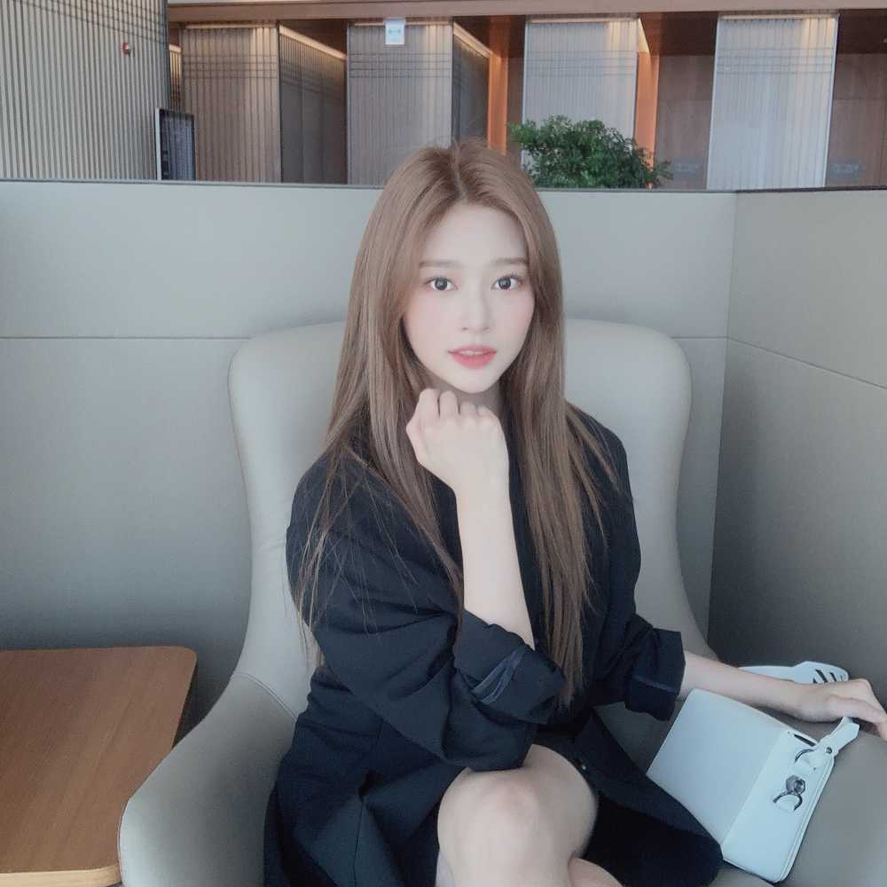

원영이가 찍어 준 사진ㅎㅎ
오늘은 원영이 생일이에용!
원영이한테는 참 고마운 것도 많고
미안한 것도 많은 것 같아요
어린 나이에 힘들 텐데 잘 이겨내고
누구보다 빛나는 원영이가 있어서
언제나 큰 힘을 받아요😊
제 친동생보다 저를 더 잘 따르는 느낌..ㅎㅎ
언제 어디서나 반짝반짝한 우리 원영이
앞으로도 건강하게 잘 자랐으면 좋겠어요!!
언니가 더 열심히 해서 원영이에게 힘이 될 수 있도록 노력할게💪🏻
아까 쑥스러워서 못다 한 말은 따로 전할거지롱ㅎㅎ
원영이 생일 축하해 줘서 고마워요, 이호!!!